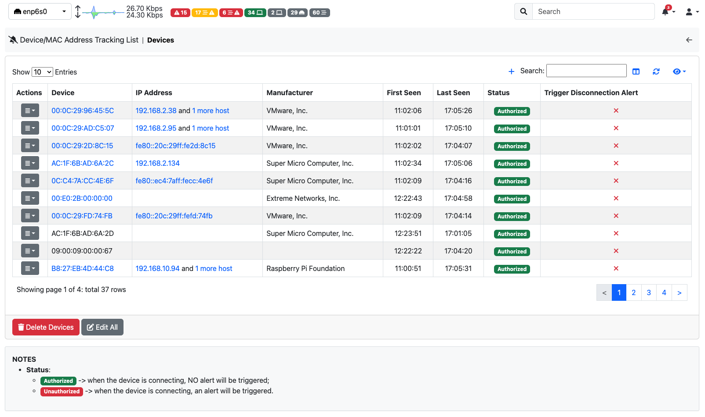
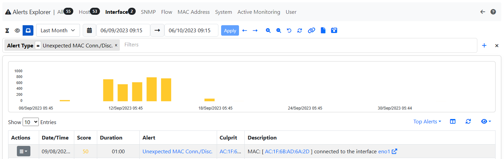
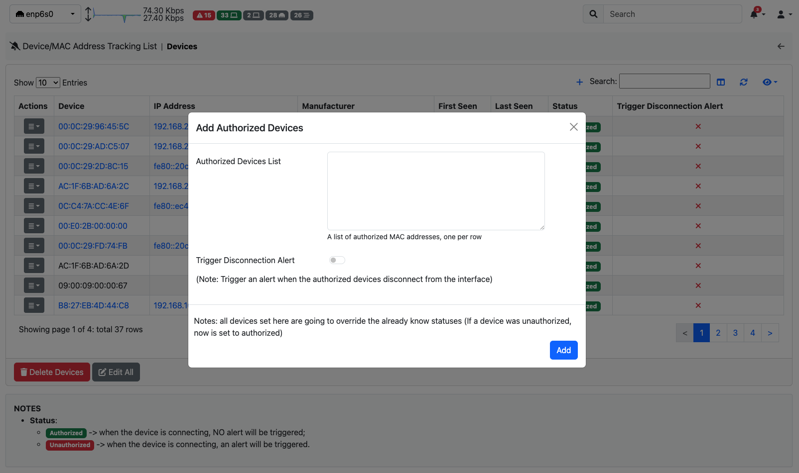

Отслеживание устройства/MAC-адреса
ntopng обнаруживает устройства (идентифицированные по их MAC-адресам), которые подключаются к сети. В закрытых сетях, таких как центры обработки данных или промышленные сети Интернета вещей, разрешено подключение только некоторым устройствам, а любое другое устройство представляет собой угрозу.
Неожиданное устройство подключено/отключено предупреждение (см. здесь) срабатывает, когда неавторизованное устройство подключается к сети и, опционально, когда авторизованное устройство отключается.
Примечание
Для этой функции требуется ntopng Enterprise M или выше и включенная поведенческая проверка «Отслеживание устройств/MAC-адресов». Открыть страницу могут только администраторы. Когда проверка отключена, на странице об этом говорится и рассказывается, как ее включить.
На странице (меню левой боковой панели: Настройки -> Отслеживание устройств/MAC-адресов) перечислены устройства, видимые на выбранном интерфейсе.

Исключение устройств
Для каждого устройства в таблице указано:
Устройство: его MAC-адрес (и его имя, если оно установлено), а также то, находится ли оно в сети или офлайн. Значок рядом с ним открывает сведения об устройстве;
IP-адрес: первый хост, видимый с этим MAC-адресом (значок открывает сведения об хосте; «+N more» перечисляет все хосты с этим MAC-адресом);
Производитель, первое посещение и последнее посещение (пусто, пока устройство находится в сети);
Статус: авторизован (нет оповещения при подключении), несанкционирован (предупреждение срабатывает при подключении) или не определено;
Триггер оповещения при отключении: будет ли срабатывать оповещение при отключении устройства.
Щелкните MAC-адрес, IP-адрес или производителя, чтобы найти это значение в таблице. Поле поиска находит MAC-адреса и производителей.
Кнопка каждого ряда редактирует устройство; его меню также открывает исторические потоки устройства (нужно ClickHouse) и удаляет их. Удаленное устройство, которое подключается снова, получает статус, установленный в настройках для новых устройств.

Оповещение об исключении устройств
Над столом:
Добавить авторизованные устройства: вставьте список MAC-адресов (по одному в строке). Уже просмотренные устройства настроены на авторизацию; Перед добавлением отображаются неверные MAC-адреса. Вы также можете включить оповещение при отключении;
Редактировать все: установите статус и оповещение об отключении всех устройств одновременно.
Редактируя одно устройство, вы также можете дать ему имя (одно слово, без пробелов).

Исключение устройств Добавить модальное окно
Кнопка «Удалить устройства» под таблицей удаляет все устройства: ntopng начинает их заново изучать, о чем сообщает сообщение под описанием страницы. Статус, присваиваемый новому устройству во время и после периода обучения (Авторизовано, Неавторизовано или Не определено), задается в настройках.
Ссылка в оповещении о неожиданном устройстве открывает эту страницу, уже ищущую это устройство.